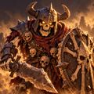
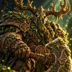
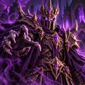

Erken erişim · iPhone
Bavulunda bir kasaba büyüt, kahramanlarını topla, dünyayı bavul bavul kurtar!
Gezgin mucit Odo'nun tüm diyarları bavullara saklanmıştı… ta ki Gölge İmparatoru gelene dek. Şimdi elinde tek bir eski deri bavul var. Ve yanında sen.
Her bavul ayrı bir bölge, ayrı bir düşman ordusu ve ayrı bir boss demek.
Okları kullan ya da parmağınla kaydır.


Metroda kısa bir oturum için de, uzun soluklu bir macera için de.
Kaptan Köşkü, Kahraman Kulesi, Demirci, Akademi, Atölye… Her bina yeni bir özellik ve kalıcı bir takım bonusu açar.
Normal'den Süper'e beş nadirlik. Nadir kahramanların kendine özgü imza yetenekleri var: delen oklar, kalkanlar, zehir.
Diziliş, sınıf üstünlüğü ve doğru hedef. Düşmanların gizli yetenekleri ve her boss'un kendine has bir hilesi var.
Her hafta sıfırlanan 50 katlı kule. Rakipler herkes için aynı: arkadaşlarınla kaçıncı kata çıktığını karşılaştır.
Zorluğunu seç, her gün biletlerinle savaş, jeton topla ve yalnızca etkinlikte verilen kahramanları kazan.
İlerlemen kendi iCloud hesabına yedeklenir; telefon değiştirsen de kaldığın yerden devam edersin.

Peri bacalarından Gölge Sarayı'na: her durakta seni bir boss bekliyor.



Bir sorun mu yaşadın, bir fikrin mi var? Bize yaz: bavulkasabasi@gmail.com. Oyunun sürümünü (Ayarlar → Hakkında) ve telefon modelini eklersen daha hızlı yardımcı olabiliriz.
Telefonunda iCloud açıksa oyun kaydın kendi iCloud hesabına yedeklenir. Oyunu aynı Apple kimliğiyle açtığında "Kaydın Bulundu" penceresi çıkar ve kaldığın yerden devam edersin. Ayarlar ekranının altında yedeğin açık olup olmadığı yazar.
Geçtiğin bölümleri tekrar oyna, kahramanlarına seviye atlat, eşyalarını güçlendir ve dizilişi ayarla (büyücü ve okçu arkaya). Akademi, Atölye, Sefer ve etkinlikler de altın kazandırır. Ana ekrandaki "Sıradaki" şeridi ne yapman gerektiğini söyler.
Nadirlik: 1 elmas Normal, 5 elmas Süper. Kahraman detayında nadirlik etiketine dokunarak Nadirlik Rehberi'ni açabilirsin.
Ayarlar → Hesabı ve verileri sil. Telefondaki kaydın, iCloud yedeğin, anonim oyuncu kimliğin ve kullanım verilerin silinir. Ayrıntılar: Gizlilik Politikası.